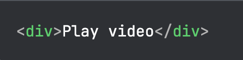
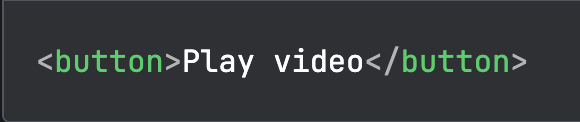
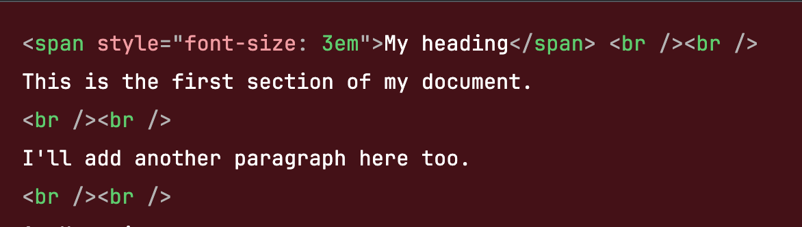
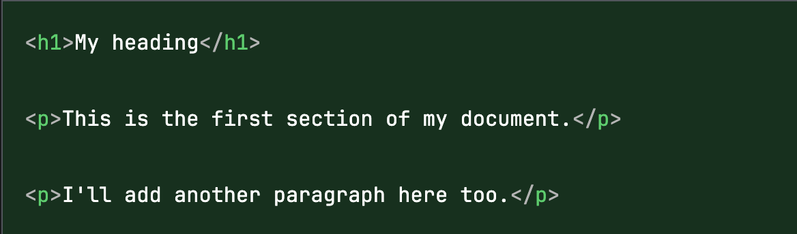
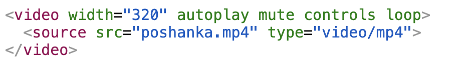

One of the most common yet effective practices is to have a folder containing your html files,
and subfolders for relevant media. (e.g Images, Videos, Music etc.)
When sourcing a media file from a subfolder, be sure to use the forward slash: '/'
For example, to use the image bacon.jpg from the subfolder images,
write <img src="images/bacon.jpg" alt = "... and so on">.
Making Good Images
Making it fit
Images are tricky to implement in html - they come in all shapes and sizes, and don't always fit on the web page.
A good way to make sure an image fits onto any screen and keeps its proportions is with the width attribute in the <img> tag.
For example, <img src = "tower.png" alt = "" width = "50%"> makes sure the image tower.png always takes up half the width of the browser. HOWEVER, this feature has been removed in HTML5 and should hence only be done in CSS. Not HTML.
So alternatively, set width = "500":
Below is a screenshot from Hollow Knight: Silksong by Team Cherry, displayed by an img tag:
Screenshot from Hollow Knight: Silksong by Team Cherry (tower.png). The html used to display this image:
<img src="imgs/tower.png" alt="Old tower in a forest of clover plants" title = "tower.png" width= "500">
The alt attribute
The alt attribute of an <img> tag is also particularly important.
A good alt tag should be short, concise, and purposeful. Convey meaning, not description!
For example, an alt of "A photo I took of three stars shining in the night sky."
is better than "Picture of three stars shining in the night sky."
A good altA bad alt
In another example, an alt of "" is perfectly fine for a decorative image-but still necessary, so don't skip the alt.
Just for decoration
Notice how the small broken image icon doesn't show up here.
Last but not least: If the alt is too long (e.g infographics), it is a good idea to make the alt a link to a separate page
with the full information, instead of a verbose paragraph.
When your alt is too long...
Writing Hyperlinks
href: Hyperlink reference
There are three main types of hyperlink reference: absolute, relative and embedded links.
Absolute reference involves the full url:
<a href="https://orgmode.org">
Always use absolute references when you link to an external page, i.e a site that you don't own.
Relative reference involves only the specific file from the same site:
<a href="dog.html">
<a href="MyFolder/plant.html">
Use relative references when you link to different parts of your own site.
Embedded reference are links to different parts of the same page.
Return to top: <a href="#top">
Note: for this to work, the top tag of the page must have an attribute id set to "top".
Here, I did so with the body tag:
<body id="top">
Go to Making Good Images: <a href="#images">
Similarly, the <section> tag I used for Images has been set with the id = "Images":
<section id="Images">
Embedded links are useful for quick site navigation, as demonstrated by the examples mentioned above.
The target attribute
The target attribute allows us to control where we want a link to open.
The two most prominent uses are as follows:
_self:
The default value. Opens the new page in the current frame (which opens it in the current window in most cases)
Click the image to open it in the current window (Screenshot from Hollow Knight: Silksong by Team Cherry)
<a href="imgs/chasm.png" target="_self">
_blank:
Opens the link in a new window.
Click the image to open it in a new window (Screenshot from Hollow Knight: Silksong by Team Cherry)
<a href="imgs/jumper.png" target="_blank">
Making things Accessible
Accessible HTML is HTML organized for the benefit of the widest possible audience, including people with disabilities.
Below are two good tips for writing accessible HTML:
Good Semantics
Semantics are meaning. They are crucial to all code, yet easily the most broken convention in writing accessible HTML.
Different tags have different meaning (semantics) in HTML: It is important to know when to use which. For example:

The <div> tag has no semantic meaning; from it we know nothing about what "Play Video" is meant to represent.
This is bad practice.

The <button> tag has semantic meaning: it clearly tells us that the text "Play Video" will display on a clickable button.
This is a semantic tag — they convey the meaning and underlying purpose of contained text.
Another commonly seen bad practice is using line breaks, i.e <br>, to separate headings and paragraphs.

Both the <span> and <br> tags exist for the sole purpose of formatting. They do not convey anything about the meaning of the contained text.
Is "My heading" just a piece of stylized text, or the actual heading of the document? It is not clear.
This HTML is hard to debug, and would be difficult to understand for visually impaired people.

The <h1> and <p> tags clearly represent the hierarchy and structure of the text.
The HTML "says" that the first line is the highest level heading, and that the next two lines are separate paragraphs.
It is shorter and far more concise than the previous HTML, which "says" the first line is stylized to be bigger, followed by two line breaks, followed by another line...and so on.
Clear Language
Next concerns not the way we use HTML tags, but how we write the text within.
It is important to make sure the language of our site is simple and easy to understand for most people.
Four important guidelines for writing clearly are as followes:
Don't use unnecessarly slang terms, or overtly complex language.
For example, saying "This movie was a great watch" is better than saying "This movie was fire".
Don't use dashes, i.e – and —, if you can avoid it.
For example, instead of saying "1–10", say "1 to 10".
Expand abbreviations once or twice before fully abbreviating them.
For example, start with "World Health Organization", then use the abbreviation WHO with the HTML <abbr> tag,
i.e <abbr title = "World Health Organization">WHO</abbr>
Bonus tutorial: the video tag
Thanks for reading my site! As a bonus for coming this far, here is a tutorial on how to use the video tag.

HTML video tag designed to display a video that autoplays on a website.
To use the video tag, you can first set the width and height attributes to your desired values in the start tag.
This works similarly to img, where the width and height are automatically scaled to fit the video's original resolution if one is given but the other is not.
After the width and height attributes you can add the keyword attribute autoplay or muted to play the video automatically, or with no volume respectively.
The controls attribute makes video controls visible to the user. The loop attribute makes the video repeat its duration endlessly.
All four aforementioned attributes are special in that they do not require you to assign a value with the equal sign.
Between the start and end tag is the self-closing source tag:
Inside this you need to use the src attribute to indicate the path to the file,
and the type attribute to indicate the filetype, which in this case is "video/mp4".
The result of the above HTML has been displayed below.
Additionally, the aria-label has been used in the video start tag to provide some alternative text, as the video tag has no alt attribute.
A gameplay clip from Hollow Knight: Silksong by Team Cherry.
Hovering over the video allows you to access video controls. The video is muted and plays automatically on loop, but you can modify the settings here.